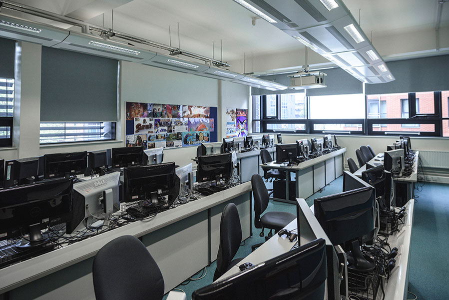
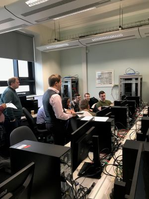
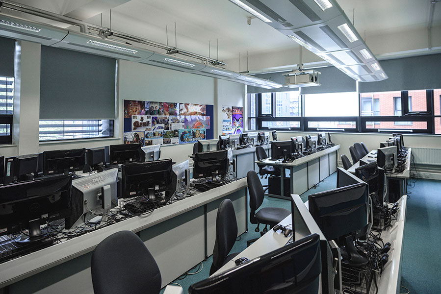
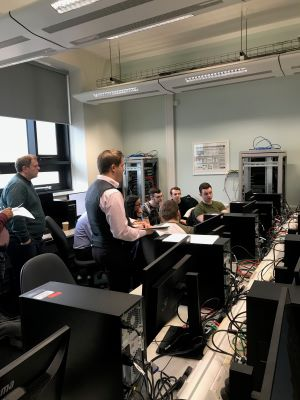

Computing Courses
The College offers a range of courses to suit applicants with varying backgrounds and educational abilities. At undergraduate level, there are single BSc Honours Degree courses in Computing, Computer Networks, Software Engineering, and Cyber Security with Forensics, amongst others.
The College teaches undergraduate and postgraduate courses in a wide range of specialisms, including computer science, software development, information systems, networking, and software engineering. It is at the heart of a passionate computing community, including student societies devoted to games development, digital forensics, and programming.
The courses are British Computer Society accredited and are highly relevant to modern industry. They are designed to prepare students for professional occupations in Computing and related fields. Many graduates continue their studies to pursue higher degrees such as an MSc or PhD.